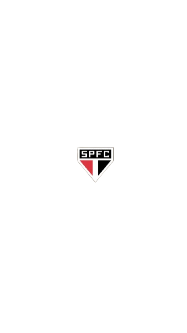
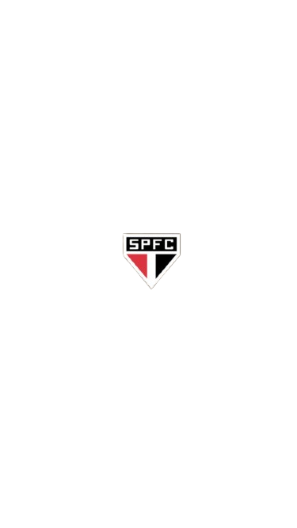

愛しい人、お誕生日おめでとう！最高の一日になりますように、そして心から楽しんでください。 せめて君のために何か書くくらいはしてあげたいよね？それに、今までやってきたこと、そしてこれからもやっていくことすべてに謝る。複雑な気持ちなのは分かってるし、時には自分を諦めたくなることもあるけど、でも、だんだん良くなってきているって約束する。君は素晴らしい女の子。美しくて、知的で、勤勉。それが君の本当に素晴らしいところだと思う。まあ、私は文章も話もできないから、それもきっとすごく悪いんだろうね。だって、寝ずに書いて、Restartを聴きながら壁紙の君の写真を見てるんだから。でも、君には感謝したいことがたくさんある。君がしてくれたこと、言ったこと、時には傷ついたことさえも。誠実であることは、私がとても大切にしていることだし、君を心から愛している。知ってた？きっとこれを読んでる頃には、君はもうイタポアに戻ってるだろうし、僕は君のそばにいるよ。君がいないこの時間は、私の人生で最悪の日々になるだろう。頭の中では色々なことを想像するけれど、どうにか乗り越えようとする。君が…戻ってきてもいいし、戻ってこないでもいい。もう君は必要ない。ハハハ ねえ、愛しい人、君は素晴らしい。知っておいて。君は世界で一番素敵な人で、世界で一番美しい。 うーん、どうしてそんなに完璧でなきゃいけないの？怖い。だって、これから君はJVLで一人ぼっちになるし、大学では新しい人に出会うし、男の子もいる。 それが少し僕にそんな風に感じさせるんだけど、でもそれは僕自身の不安感なんだよね。ねえ、愛しい人、僕は君を 本当に愛している。君は僕の人生最愛の人。君が戻ってきたら、キスとハグでいっぱいにするよ、僕の 美しいプリンセス。愛しているよ。楽しい一日を。
Oii amor, feliz aniversário! Que seu dia seja perfeito e que você aproveite muito. Bom, acho que o mínimo que eu poderia fazer seria escrever algo pra você, né? Além também de pedir desculpas por tudo que fiz e faço. Às vezes eu sei que é complicado, e que às vezes dá vontade de desistir de mim, mas eu tô melhorando, prometo. Você é uma garota incrível: bonita, inteligente, esforçada, e eu acho isso muito perfeito em você. E bom, eu não sei escrever textos nem falar, então isso provavelmente deve estar muito ruim também, porque estou escrevendo sem dormir e ouvindo Restart enquanto olho sua foto no meu wallpaper. Mas bom, eu tenho muito a agradecer a você por muitas coisas que você fez, por coisas que você fala, mesmo que às vezes algumas machuquem. Você ser sincera é algo que eu amo muito, e eu também amo muito você, sabia disso? E bom, provavelmente quando você ler isso, você já vai ter voltado pra Itapoá e eu vou estar do seu lado. E bom, esse tempo que você vai ficar pra JVL vai ser os piores dias da minha vida. Vou criar coisas na cabeça, mas vou tentar lidar com elas. Espero que quando você voltar, você não volte não querendo mais eu kkkk. Bom, amor, você é incrível, saiba disso. Você é a melhor pessoa do mundo e a mais linda do mundo. Aff, por que você tem que ser tão perfeita? E isso me deixa com medo, pois agora você vai estar sozinha em JVL e vai conhecer pessoas novas na sua faculdade, vai ter garotos, e isso é algo que me deixa meio assim, mas é por mim mesmo, insegurança própria. Bom, amor, eu te amo muito, e você é o amor da minha vida. Quando voltar, vou te encher de beijos e abraços, minha princesa linda. Te amo! Aproveita seu dia.